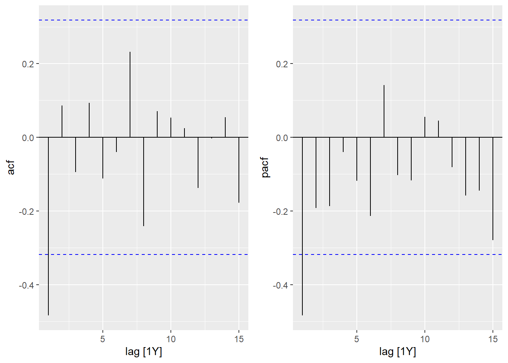
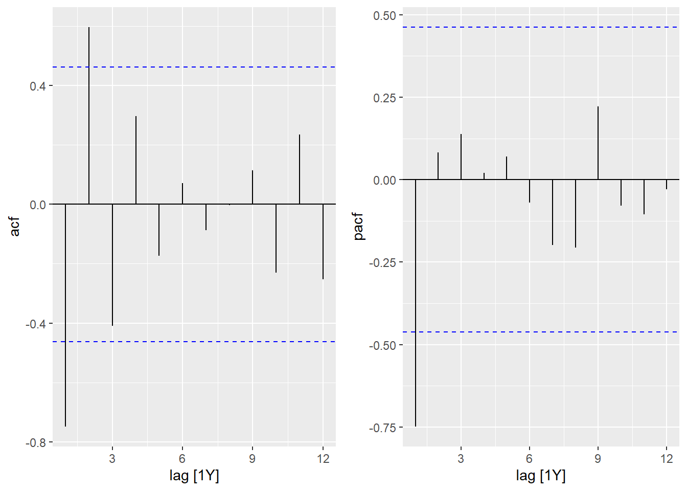
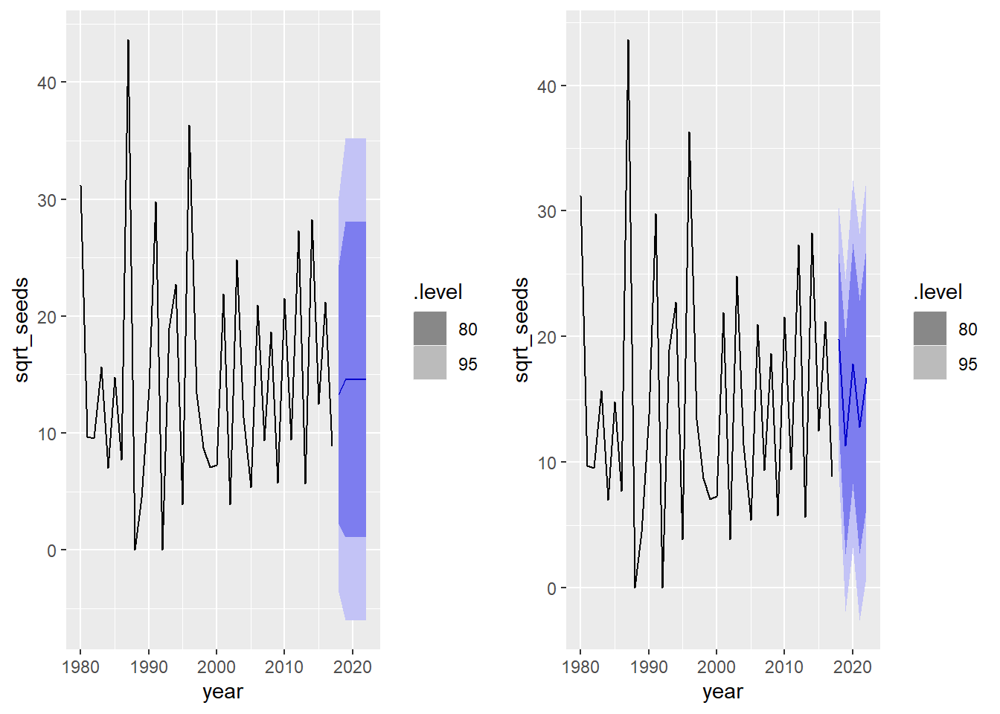

Time series - Solutions
Data
The oak_seeds.csv dataset shows the number of seeds of Quercus crispula oak collected annually (1980-2017) by 16 traps located in a stand of this species in Japan.
seed <- read.csv("../donnees/oak_seeds.csv")
head(seed)## year trap seeds
## 1 1980 1 13
## 2 1980 2 131
## 3 1980 3 44
## 4 1980 4 44
## 5 1980 5 47
## 6 1980 6 27The oak_weather.csv file contains annual weather data for that same site:
weather <- read.csv("../donnees/oak_weather.csv")
head(weather)## year temp_fl temp_gr rain_fl rain_gr
## 1 1980 14.9 15.2 75 437
## 2 1981 9.3 15.4 40 766
## 3 1982 11.5 15.8 109 487
## 4 1983 11.5 15.9 49 657
## 5 1984 13.4 17.1 49 622
## 6 1985 11.5 16.9 63 501- temp_fl: Mean temperature (\(^{\circ}\)C) during the flowering period of the tree.
- temp_gr: Mean temperature (\(^{\circ}\)C) during the growing season.
- rain_fl: Total amount of rain (in mm) during the flowering period of the tree.
- rain_gr: Total amount of rain (in mm) during the growing season.
These data come from the following study:
Shibata, M., Masaki, T., Yagihashi, T., Shimada, T., & Saitoh, T. (2019). Data from: Decadal changes in masting behaviour of oak trees with rising temperature. Dryad Digital Repository. https://doi.org/10.5061/dryad.v6wwpzgrb
1. Site-level time series
- Calculate the total number of seeds collected per year (all traps combined) and apply a square root transformation to the result. Convert the result into a temporal data frame (tsibble) and view the resulting time series.
Note: Since we will be using linear rather than generalized models in this exercise, the square root transformation is intended to stabilize the variance of the count data.
Solution
library(fpp3)
library(dplyr)
library(ggplot2)
seed <- group_by(seed, year) %>%
summarize(seeds = sum(seeds)) %>%
mutate(sqrt_seeds = sqrt(seeds))
seed <- as_tsibble(seed, index = year)
autoplot(seed, sqrt_seeds)
- Visualize the temporal correlations for this series. What type of ARIMA model (AR and/or MA, as well as their order) might be appropriate here?
Solution
cowplot::plot_grid(autoplot(ACF(seed, sqrt_seeds)),
autoplot(PACF(seed, sqrt_seeds)))
The ACF and PACF are significant for a lag of 1, suggesting an MA(1) or AR(1) model.
- Fit an ARIMA model by letting the function automatically choose the type and order of the model. What do the estimated coefficients mean?
Solution
mod_1c <- model(seed, ARIMA(sqrt_seeds))
report(mod_1c)## Series: sqrt_seeds
## Model: ARIMA(0,0,1) w/ mean
##
## Coefficients:
## ma1 constant
## -0.6926 14.5833
## s.e. 0.1638 0.4527
##
## sigma^2 estimated as 74.57: log likelihood=-135.14
## AIC=276.28 AICc=276.99 BIC=281.19This is an MA(1) model. The coefficient MA1 is -0.69, which means that the residual in one year contributes negatively to the following year. The term constant (14.6) is the mean of sqrt_seeds across years.
- Join the
weatherdataset and fit an ARIMA model with the four weather variables as external predictors. Do these variables help to better predict the number of seeds produced per year?
Solution
seed <- inner_join(seed, weather)## Joining, by = "year"mod_1d <- model(seed, ARIMA(sqrt_seeds ~ temp_gr + rain_gr + temp_fl + rain_fl))
report(mod_1d)## Series: sqrt_seeds
## Model: LM w/ ARIMA(0,0,1) errors
##
## Coefficients:
## ma1 temp_gr rain_gr temp_fl rain_fl
## -0.6564 -0.879 -0.0051 2.5660 0.0188
## s.e. 0.1810 0.801 0.0082 1.0448 0.0404
##
## sigma^2 estimated as 72.27: log likelihood=-132.85
## AIC=277.7 AICc=280.41 BIC=287.52Only the temperature during the flowering period (temp_fl) seems to have a significant effect, but the AIC is higher than the previous model, so this model is not better than the one without predictors.
- What type of model is chosen by
ARIMA()if you consider only the sub-series starting in the year 2000, without an external predictor? Explain this choice from the graph in (a) and the temporal correlations for this subseries.
Solution
seed2000 <- filter(seed, year >= 2000)
mod_1e <- model(seed2000, ARIMA(sqrt_seeds))
report(mod_1e)## Series: sqrt_seeds
## Model: ARIMA(1,0,0) w/ mean
##
## Coefficients:
## ar1 constant
## -0.7719 26.5884
## s.e. 0.1394 1.2182
##
## sigma^2 estimated as 28.52: log likelihood=-55.09
## AIC=116.18 AICc=117.89 BIC=118.85It is now an AR(1) model with a negative correlation of -0.77. From the year 2000, the time series in 1(a) seems to alternate more regularly between high and low values every 2 years. Also, if the PACF graph contains a single significant value, the ACF is significantly positive at a two-year lag, as is the case for an AR model. (The negative correlation between \(y(t)\) and \(y(t-1)\), then \(y(t-1)\) and \(y(t-2)\), causes a positive correlation between \(y(t)\) and \(y(t-2)\)).
cowplot::plot_grid(autoplot(ACF(seed2000, sqrt_seeds)),
autoplot(PACF(seed2000, sqrt_seeds)))
- Calculate the forecasts from the models in (c) and (e) for the next five years. How do these forecasts differ?
cowplot::plot_grid(autoplot(forecast(mod_1c, h = 5), seed),
autoplot(forecast(mod_1e, h = 5), seed))
In the 2nd year, the MA(1) model loses all “memory” and returns to the series mean, while the AR(1) model continues a cycle every 2 years.
2. Trap-level time series
- Go back to the original table showing the number of seeds per year and trap, then apply the square root transformation to the number of seeds. Then use the
lmefunction from the nlme package to fit a linear mixed model including: the fixed effect of weather variables, the random effect of the trap and the temporal correlations from one year to another.
Here is an example of how to specify a random effect of a GROUP variable on the intercept of a lme model, as well as an ARMA correlation between successive elements of the same GROUP:
library(nlme)
mod_lme <- lme(..., data = ...,
random = list(GROUP = ~1),
correlation = corARMA(p = ..., q = ..., form = ~ 1 | GROUP))Solution
seed <- read.csv("../donnees/oak_seeds.csv")
seed <- mutate(seed, sqrt_seeds = sqrt(seeds))
seed <- inner_join(seed, weather)## Joining, by = "year"We try a MA(1) model as in 1(d).
library(nlme)
mod_lme <- lme(sqrt_seeds ~ temp_gr + rain_gr + temp_fl + rain_fl,
data = seed, random = list(trap = ~1),
correlation = corARMA(p = 0, q = 1, form = ~ 1 | trap))
summary(mod_lme)## Linear mixed-effects model fit by REML
## Data: seed
## AIC BIC logLik
## 2982.101 3017.317 -1483.051
##
## Random effects:
## Formula: ~1 | trap
## (Intercept) Residual
## StdDev: 0.5691401 2.758073
##
## Correlation Structure: ARMA(0,1)
## Formula: ~1 | trap
## Parameter estimate(s):
## Theta1
## -0.2633027
## Fixed effects: sqrt_seeds ~ temp_gr + rain_gr + temp_fl + rain_fl
## Value Std.Error DF t-value p-value
## (Intercept) 0.7291741 2.0910432 588 0.348713 0.7274
## temp_gr -0.3832523 0.1208343 588 -3.171717 0.0016
## rain_gr -0.0016734 0.0007029 588 -2.380675 0.0176
## temp_fl 0.8182160 0.1012331 588 8.082497 0.0000
## rain_fl 0.0002783 0.0043666 588 0.063724 0.9492
## Correlation:
## (Intr) tmp_gr ran_gr tmp_fl
## temp_gr -0.782
## rain_gr 0.126 -0.297
## temp_fl -0.355 -0.258 -0.047
## rain_fl -0.356 0.205 -0.243 0.132
##
## Standardized Within-Group Residuals:
## Min Q1 Med Q3 Max
## -1.6980503 -0.7257518 -0.1678371 0.5658611 3.8985049
##
## Number of Observations: 608
## Number of Groups: 16- Compare the accuracy of the fixed effects in this model in (a) to the model in 1(d). What is the reason for this difference?
Solution
Here, three of the climate variables have a significant effect, but the MA(1) effect is also smaller (Theta1 = -0.26).
The square root transformation applied to the number of seeds in each trap is not equivalent to the square root transformation applied to the sum of seeds in all traps. (The square root of the sum is not equal to the sum of the square roots). It appears that the residual variance is smaller in this model than in the model for the square root of the sum, which increases the accuracy of the fixed effect estimates.